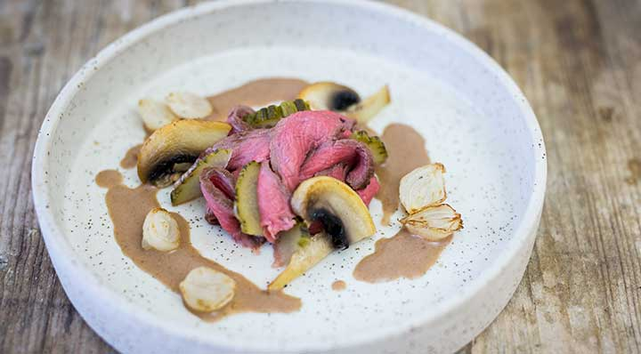

Filet Stroganoff Sous Vide
Autor: Annette Sandner
Zutaten
- 800 g Rinderfilet
- Salz
- 3 EL Olivenöl
- 2 Zweige Rosmarin
- 250 g Champignons
- ca. 20 Perlzwiebeln, eingelegt und abgetropft
- 100 ml Demiglace
- 100 ml Gemüsebrühe
- 50 ml Gurkenwasser
- 1 TL Dijon-Senf
- 100 g Sauerrahm
- frisch gemahlener schwarzer Pfeffer
- 4 große Essiggurken
Zubereitung
- Das Rinderfilet leicht salzen und mit dem Olivenöl und den Rosmarin vakuumieren und bei 54 °C im Wasserbad des fusionchef Sous Vide garen.
- Das Fleisch aus dem Vakuumbeutel nehmen, den Fleischsaft aufheben. Rinderfilet von allen Seiten in einer Pfanne scharf anbraten, herausnehmen und warm stellen.
- Die in Scheiben geschnittenen Pilze und halbierten Perlzwiebeln in der Pfanne von beiden Seiten anbraten, ebenfalls herausnehmen und warm stellen.
- Demiglace, Gemüsebrühe, Fleischsaft und Gurkenwasser in der Pfanne angießen und einköcheln, bis sie der Bratensatz löst. Den Senf dazugeben, von der Hitze nehmen und den Sauerrahm einrühren. Mit Salz und frisch gemahlenem schwarzen Pfeffer abschmecken.
- Das Rinderfilet in dünne Scheiben schneiden und mit Pilzen, Essiggurken, Perlzwiebeln und Sauce anrichten.
Dieses Rezept wurde uns freundlicherweise von Annette Sandner zur Verfügung gestellt.

German Cuisine